Inngangur
Markmið þessa verkefnis er að hanna og þrívíddarprenta lítinn hlut sem væri erfitt að gera með frádráttarframleiðsluHugmyndaflakk og vangaveltur
Hér er aðallatriði að hanna eitthvað sem er ekki hægt að auðvelda framleiða með „subtractive" aðferðum, þ.a. þegar maður byrjar með gegnheilt form af efni og mótar það með því að t.d. saga, fræsa, eða pússa það.
Eftir smá hugmyndaflakk þar sem m.a. kom til greina kertastjaki og gírhjól lendi ég að lokum á sítrónusafara. Það kom aðallega vegna þess að mér fannst formið flott og langaði að prófa teikna það. Það vantaði líka á heimilið en ég hugsa að það sé betra að fá safara úr plasti sem uppfyllir rétta staðla og er framleiddur í betra umhverfi, þ.a. þessi verður meira til skrauts.
Þá fór ég að skoða það sem hafði verið hannað áður á netinu og fann margar flottar útfærslur, sem má sjá á þessum hlekk.
Ástæður fyrir samlagningarframleiðslu
Sítrónusafari kallar ekkert endilega á hönnun sem ekki væri hægt að framkvæma með frádráttarframleiðslu en til að uppfylla kröfur verkefnisins hafði ég hann, þ.a. erfitt væri að gera hann með einfaldri frádráttarframleiðslu.
Helsta takmörkun frádrátttarframleiðslu eru holrými, því tólin komast ekki þangað inn. Hluturinn er með 15% infill, þ.a. að hann er að mestu holur að innan sem væru auðvitað ómögulegt með frádráttarframleiðslu. Það er samt ekki hluti af hönnun hlutarins.
Þetta eru fjögur atriði í hönnun hlutarins sem væri erfitt að gera með frádráttarframleiðslu:
- Formið myndi vera erfitt margar sveigjur og beittir endar, en þó ekki ómögulegt
- Það er holrými undir kúlunni sem væri ómögulgt að fræsa án þess að taka hlutinn út og festa upp á nýtt, kallast "undercut"
- Annað atriði eru götin á botni safarans sem myndu vera áskorun fyrir 3-ása fræsara því hann myndi eiga í vandræðum með að komast að þeim.
- Stórt atriði í þessu væri líka bara eyðsla á efni. Ef að það ætti að fræsa safarann úr gegnheilum kubbi af plasti yrði sóunin stjarnfræðileg.
Hönnun
Safarinn var teiknaður í Fusion 360. Ég notaðist við parametríska hönnun. Safarinn er hannaður til að passa fullkomlega ofan á glösin heima hjá mér. Til að ákvarða stærðirnar mældi ég sítrónu sem ég fann heima sem hafði ca. 5 cm ummál og glasið sem var með 7,5 cm ummál. En það er allt paramatrískt frá hæð og ummáli upp i fjölda tanna.

Það er smá halli í yst á hlutnum svo safinn renni ekki út af og götin eru hönnuð með það í huga að steinar komist ekki í gegnum þau.
Prentun
Þegar búið var að teikna hlutinn í Fusion er einfalt að koma honum í þrívíddarprentarann. Maður „exportar" hlutinn sem .3mf skrá í Fusion. Næst þarf að hlaða niður PrusaSlicer. Þegar þangað er komið er bara hægt að draga hlutinn inn.
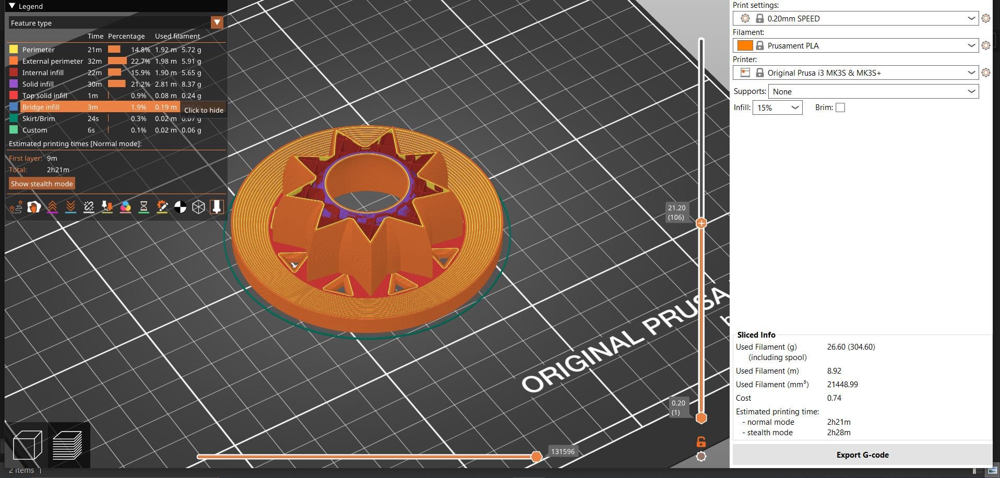
Prófun
Það voru smá áhyggjur af „overhang" hlutarins, þ.e. efsta hluta hans. Ég hafði pælt í því við hönnunina og studdist við skemmtilegt plakat sem Maggi talaði um og má sjá hér fyrir neðan.
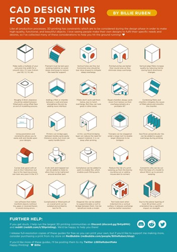
Þar er talað um að láta hringlaga form vera tárlaga til að þau hrynji ekki. Ég gerði það en vildi samt vera alveg viss, þ.a. ég prentaði fjórðung af safaranum í 70% stærð til að lágmarka efnisnotkun og tíma prentunar. Það kom mjög vel út og ég ályktaði að ef oddurinn nær að standa einn og sér mun hann klárlega halda þegar restin styður við hann sömuleiðis.
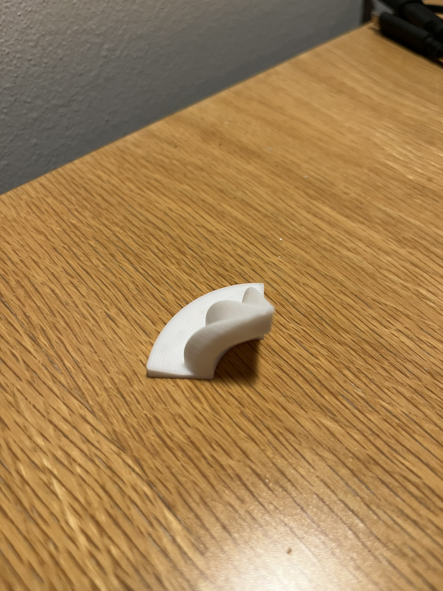
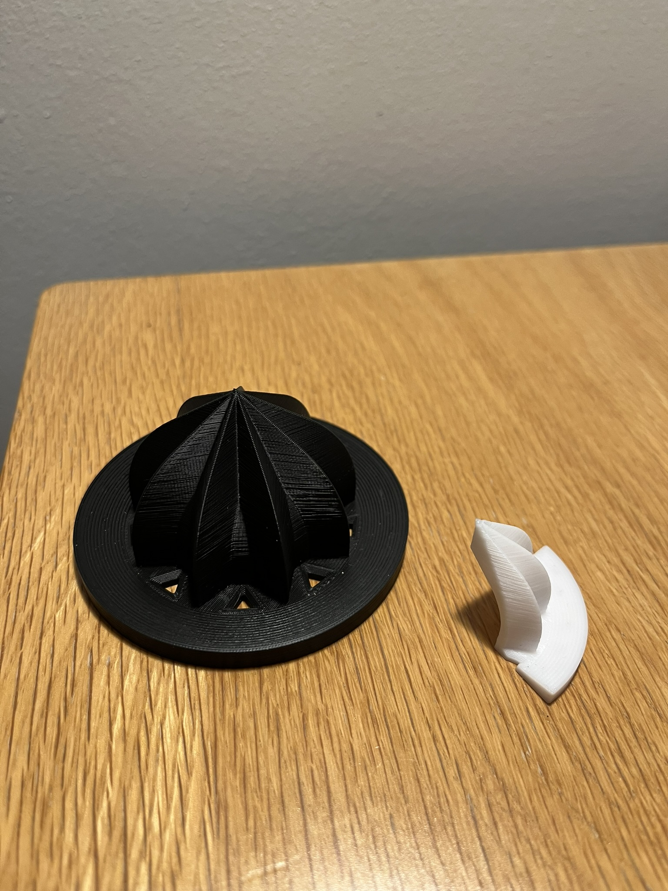
Lokaprentun
Þetta var prentað í Prusa MK3+. Ég valdi innfill 15% og 0.20 mm SPEED stillinguna svo að hluturinn yrði ekki allt of lengi á leiðinni. Þetta er líka ekki hlutur sem krefst mikillar nákvæmni því hann var meira hugsaður sem prufa fyrir formið. Ég notaði 26,6 grömm og prentunin tók 2 klst og 21 minútu og kom mjög vel út.
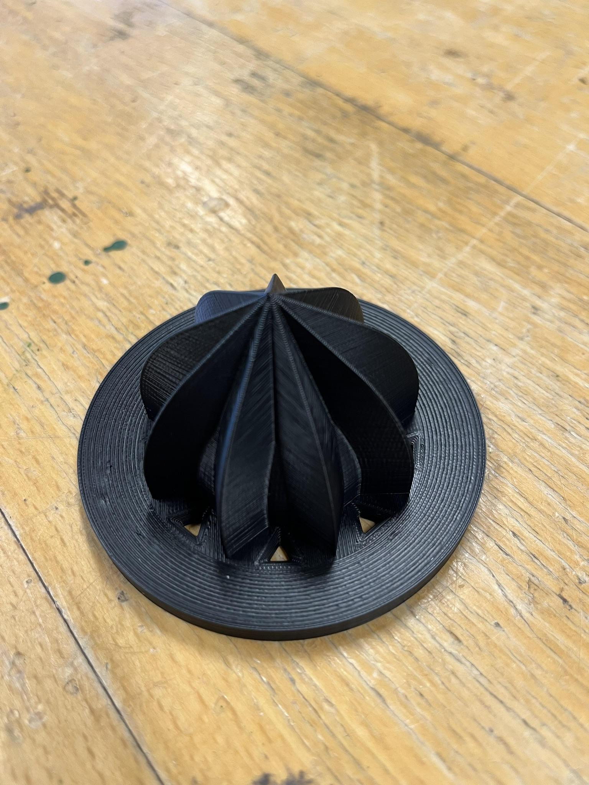
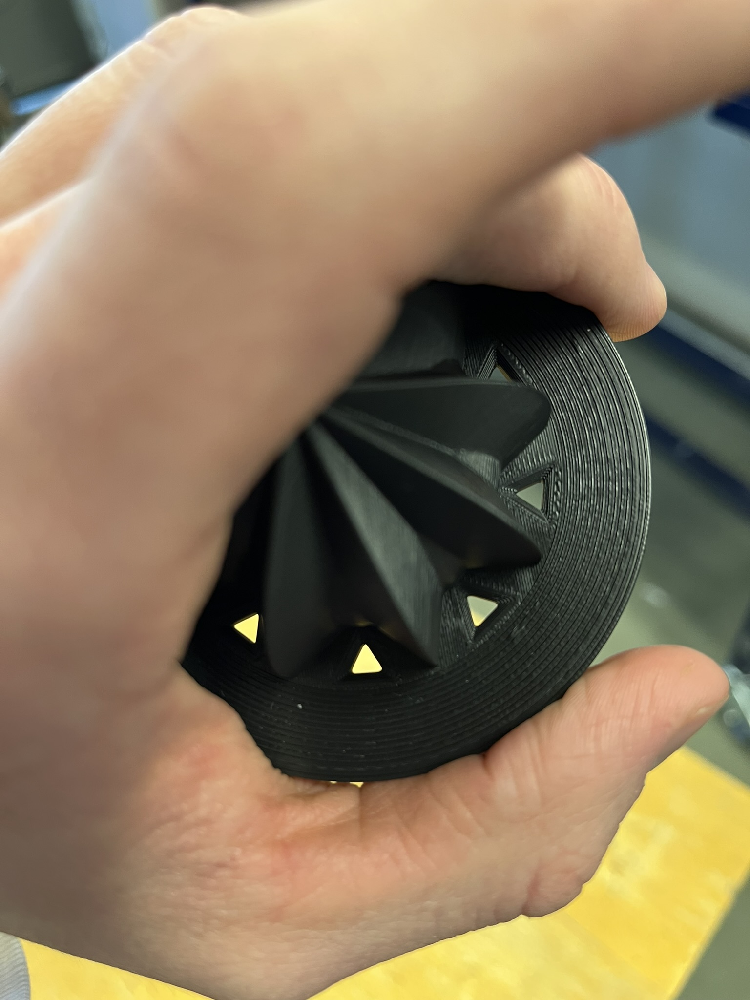
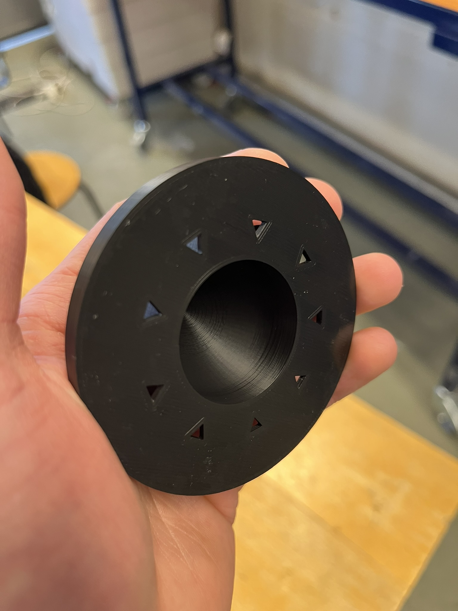
Niðurstaða
Að lokum þurfti að prófa safarann og sjá hvort að hann virkar eins og til var ætlað. Hér fyrir neðan má sjá myndir af fyrstu prófuninni:
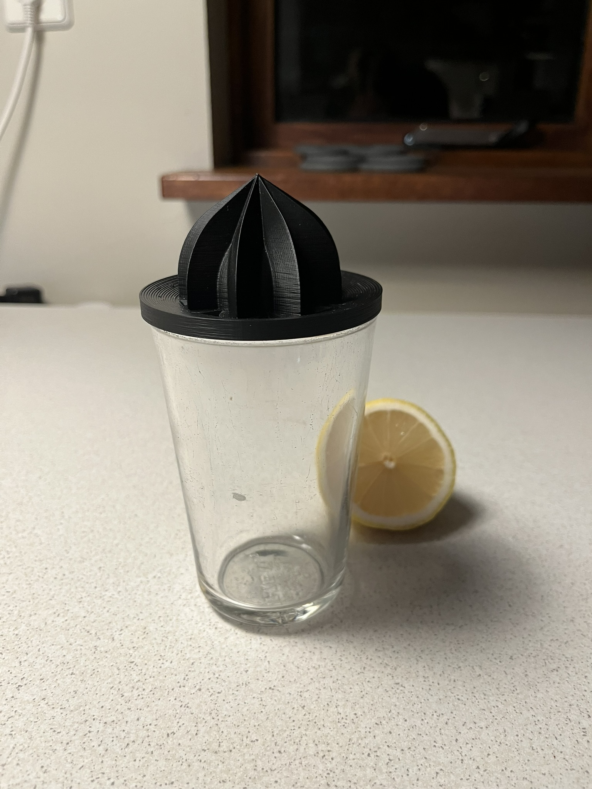
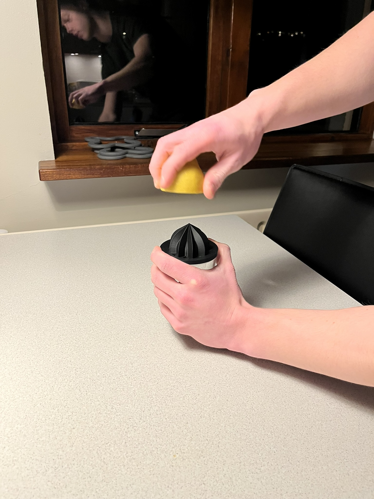
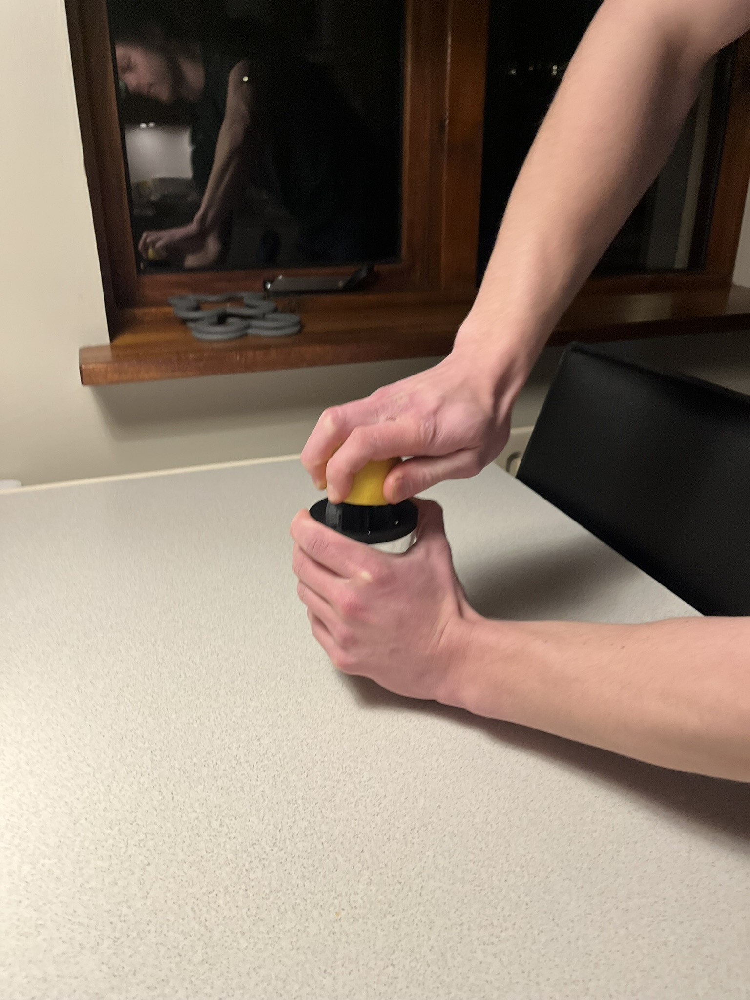
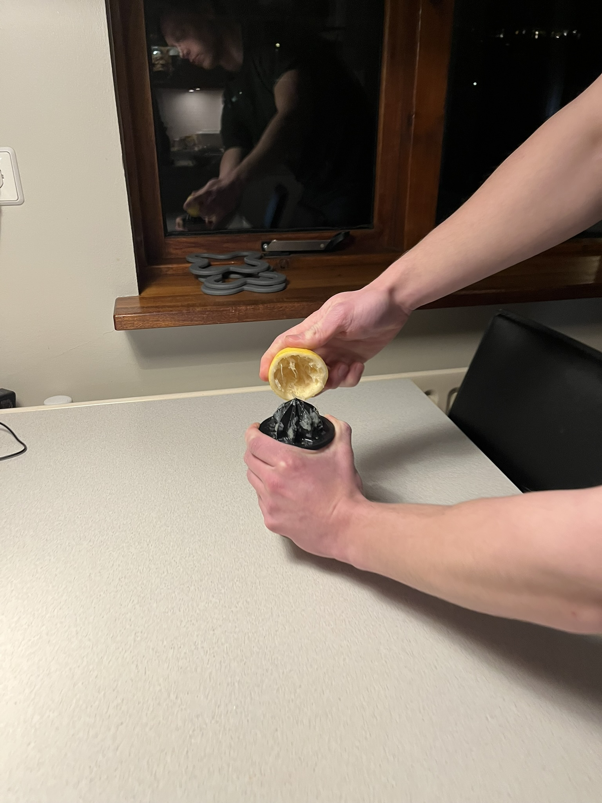
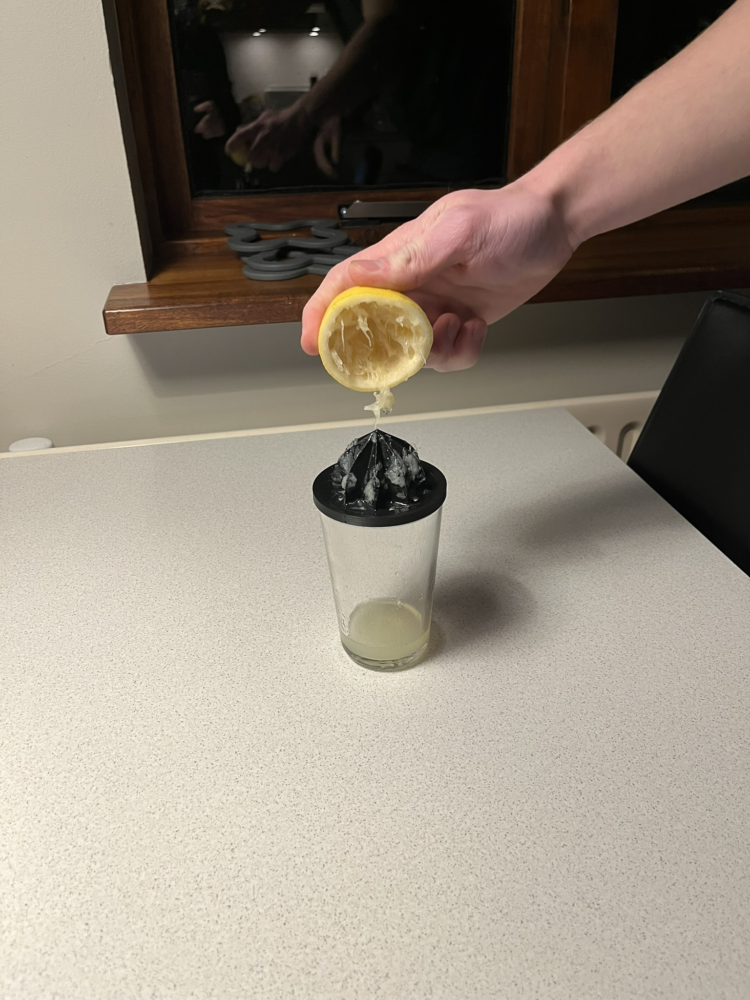
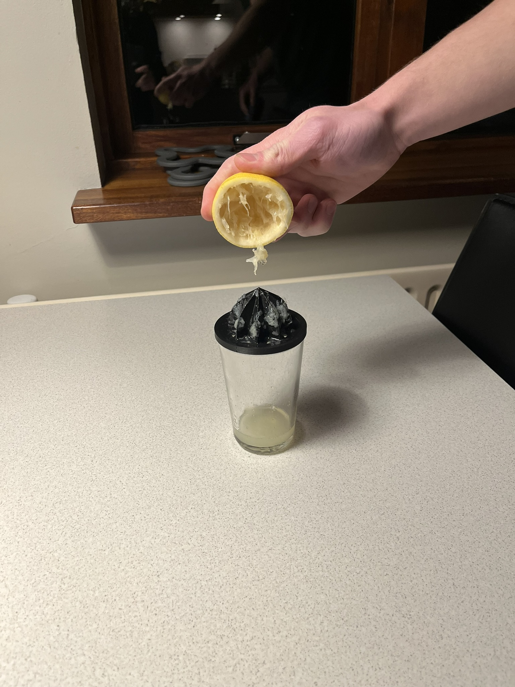
Prófunin gekk ágætlega en það eru nokkur atrið sem ég myndi breyta í hönnuninni eftir hana. Götin urðu aðins stífluð af kjötinu frá sítrónunni, þ.a. ég myndi stækka þau aðeins. Það flæddi einnig næstum út af þ.a. ég myndi stækka ytra þvermálið aðeins og hafa hallann örlítið meiri, en heilt yfir ágæt frumgerð.
Áskoranir og lærdómur
Heilt yfir var þetta skemmtilegt. Ég hafði aldrei notað þrívíddarpentara áður þ.a. helsta áskorunin var að tileinka mér þá hugsun sem varður verður að hafa við þrívíddarprentun. Þ.e. passa boga, halla, grunnflöt o.fl. Það komu ekki upp mikil áföll eða áskoranir við gerð þessa verkefnis allt gekk nokkuð vel og er sáttur við niðurstöðuna.
Þrívíddar líkan
Fyrir þrívíddarskönnunina er áhugaverðast að skanna eitthvað sem hefur áferð og form. Eftir smá hugsun ákvað ég að búa til líkan af jarðaberi. Ég notaði Polycam app sem ég hlóð niður í símann minn. Þar tók ég síðan 150 myndir af jarðaberinu sem er hámarkið fyrir fríu útgáfu forritsins. Þegar því var lokið sá forritið um rest, ég stillti það þannig að smáatriðin kæmu sem best út. Hér að neðan er hægt að skoða þrívíddar líkanið.
Líkanið kom nokkuð vel út en eftir á hyggja hefði ég kannski átt að velja stærri hlut með dýpri áferð. Áferðin næst ekki mjög vel og einnig að huga betur að lýsingunni. En heilt yfir skemmtilegt að prófa svona hugbúnað.